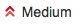
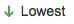

Escalation Triage Responsabilites¶
- Watch “Need Triage” queue for incoming tickets.
If ticket type = ‘Solved DU/DL/DC’ do the following:
(I). Add “Element Version”, “Components”, other fields with as much detail as possible.
(II). Take ownership of the ticket and immediately resolve it. There should be no asks from Sustaining in this ticket. The ticket is merely for tracking purposes. If there are asks from Sustaining in the ticket, move the ticket to a “CPE DU/DL/DC” ticket type and finish triaging the ticket as normal.
If the ticket is for a POC cluster, see a manager or team lead to discuss the escalation in more detail before exiting triage.
If a ticket comes in that is blatantly missing the majority of vital information and there is no indication that support did their due dilligence to investigate the issue before escalating, tag the “Labels” field with ‘SupportIssue’.
(I). Note: this will cause the Sustaining Management to follow up with Support Management about the case so don’t mark this field lightly – only when there are serious issues in the ticket.
- When a new ticket comes in:
- Tag the ticket as being triaged by commenting - “Escalation triage - conducting first pass”.
- Review new tickets for completeness:
Tag “Components” field
Tag “Dev Vertical” field (Note: you need to click Edit to find this field).
(I). “Dev Vertical” corresponds to what area of the organization this case relates to.
(II). The options are: HCL, Platform, ELement or Ecosystem
(1). If the vertical is HCL, please add Stephanie Scheffler to the Watchers list.
Accurate timeline of the issue.
(I). Look for an issue start time/date and an issue resolved time/date.
Check for correct log bundle path on scratch.
If anything you deem is important is missing from the ticket, engage support with any clarifications/questions needef for the ticket.
- If the ticket is missing vital information, move the ticket to “Need More Information”.
- This will move the ticket to the “Need More Information (NMI)” queue.
- Return the ticket to “Need Triage” once support has replied and you feel sufficient information has been provided.
- Once the ticket looks complete, begin a quick check of the logs, AIQ, or wherever is applicable to conduct a brief review of the case.
- Spend no moer than 30 minutes doing so.
- Update the ticket with any findings or speculations found for the issue.
- Even if you are unable to conduct any quick review, add a comment to the case that it has been triaged and will be moved to the “Queue” status.
Move the ticket to “In Queue” status.
Notify team via HipChat in ‘CPE-Support’ room that a new ticket has been triaged and is ready to be picked up.
If a ticket has not been picked up that needs to be assigned, contact Sustaining Manager or manager on-call.
Note
Triage responsibility rotates with the on-call schedule; if you are on-call then you have the responsibility of triaging incoming cases.
It’s a good idea to have an idea of what issues and customers are “hot” at the time of your triaging; you can find a list of these cases HERE. If an issue comes in from a ” hot” customer, you should let a Sustaining Manager know.
| Triaged | Assigned | Response from assignee | |
|---|---|---|---|
| Live | NA | 20 minutes from escalation creation | 30 minutes from escalation creation |
| High | 2 business hours from escalation creation | 4 business hours from escalation creation | 8 business hours from escalation creation |
| Med | 2 business hours from escalation creation | 12 business hours from escalation creation | 2 business days from escalation creation |
Response Time Objectives - Business Hours are 9-5 MT
The triage engineer can also adjust the priority of the escalation which by default, is not set, and labeled UNKNOWN
Escalation Priority¶
 | State | Priority |
|---|---|
| A DU/DL/DC is Pending in a short time frame (mins to hours) | Highest |
| Will occur often / business sensitivity to the esclation or account / Emails from support managers etc, asking from a shift in the speed of pickup | High |
| Prioritize depending on business impact | Medium |
| Not regular cases (unique or one off situation) | Low |
| Request for Enhancement (RFE) | Lowest |
| Need Triage / Not looked at yet | Unknown |
This priority setting will adjust the In Queue view and prioritise the escalations with priority over the FIFO queue.